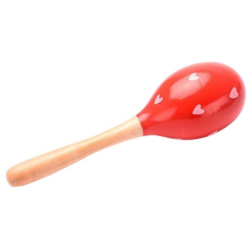
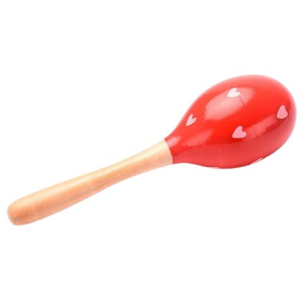
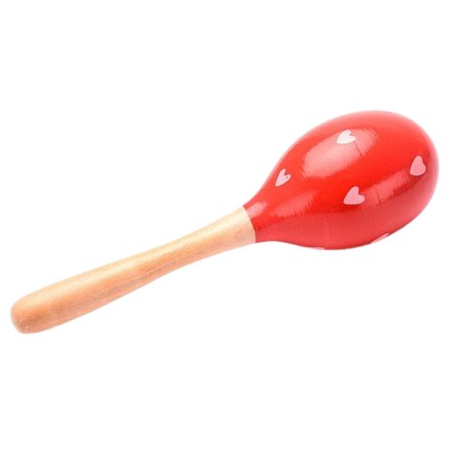

Нажаль, мого натхнення вистачило тільки "типу доробити" минулу домашню.
За 0.5 секунд анімація переходить з одного кольору в інший.
Анімація змінюється не тільки з одної точки в другу, а й в радіусі
Початок переходу з одного кольору на інший затримується на 1 секунду.
Перехід за сценарієм. Спочатку, ніби набирає швидкість.
Перехід буде здійснений на протязі одної секунди.
Швидкісний розвиток анімації.
Кількість відтворення анімації. Анімація буде відтворена 5 разів.
Анімація буде здійснена задом на перед. Безкінечно!
Ми можемо зупинити анімацію просто натискаючи на квадратик

Нажаль, мого натхнення вистачило тільки "типу доробити" минулу домашню.